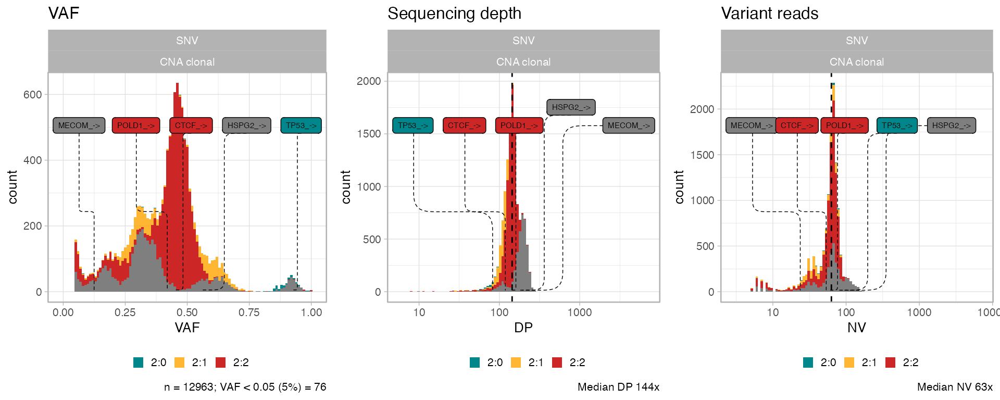

library(CNAqc)
#> ✔ Loading BMix, 'Binomial and Beta-Binomial univariate mixtures'. Support : <https://caravagnalab.github.io/BMix/>
#> ✔ Loading CNAqc, 'Copy Number Alteration quality check'. Support : <https://caravagn.github.io/CNAqc/>
# Extra packages
require(dplyr)
#if you use RStudio you will probably have to run this line
# options(connectionObserver = NULL)CNAqc has a number of simple annotation functions that can be useful for giving a preliminary idea of what somatic mutations might be driver events.
This function does not replace more complex and in-depth analyzes of mutations.
Given a table of mutation we annotate:
Position of the mutation, any of:
coding,intron,fiveUTR,threeUTR,intron,intergenic,spliceSite,promoter.Consequence on the protein for coding mutations (with eventual change in the AA):
nonsynonymous,synonymous,frameshift,stop.Synonymous mutations are then compared to known driver genes from the intOGen database, and flagged as drivers.
Optionally if the dbSNP id is present the PolyPhen score can also be annotated
The annotation phase is heavily based on the VariantAnnotation package.
We will show the functioning with tha example file shipped in CNAqc
# Load template data
data('example_dataset_CNAqc', package = 'CNAqc')
snvs <- example_dataset_CNAqc$snvs
snvs %>% head
#> # A tibble: 6 x 13
#> chr from to ref alt FILTER DP NV VAF ANNOVAR_FUNCTION
#> <chr> <dbl> <dbl> <chr> <chr> <chr> <dbl> <dbl> <dbl> <chr>
#> 1 chr1 1027104 1027105 T G PASS 60 6 0.1 UTR5
#> 2 chr1 2248588 2248589 A C PASS 127 9 0.0709 intergenic
#> 3 chr1 2461999 2462000 G A PASS 156 65 0.417 upstream
#> 4 chr1 2727935 2727936 T C PASS 180 90 0.5 downstream
#> 5 chr1 2763397 2763398 C T PASS 183 61 0.333 intergenic
#> 6 chr1 2768208 2768209 C T PASS 203 130 0.640 intergenic
#> # … with 3 more variables: GENE <chr>, is_driver <lgl>, driver_label <chr>As we can see we already have driver annotated from an external source (ANNOVAR).
We get rid of them and re-annotate the data.
# What are drivers (labels)
drivers_true <- snvs %>%
filter(is_driver == T) %>%
pull(driver_label) %>%
unique
snvs <- snvs %>%
select(-is_driver, -driver_label)The function uses databases from Bioconductor to annotate the variants. Installation of these databases might take a bit of time, as ~1GB of data have to be downloaded.
# Reference against which we mapped the reads
reference_genome <- example_dataset_CNAqc$reference
# All those packages are distributed in Bioconductor
if (!requireNamespace("BiocManager", quietly = TRUE))
install.packages("BiocManager", repos="http://cran.us.r-project.org")
# We have to install the corresponding txdb package for transcript annotations
paste0("TxDb.Hsapiens.UCSC.",reference_genome, ".knownGene") %>% BiocManager::install()
# We have to install also the BS database for the sequences (it may take some time)
paste0("BSgenome.Hsapiens.UCSC.",reference_genome) %>% BiocManager::install()
# Then these two packages provide usefull utilities to deal with biological databases
"Organsm.dplyr" %>% BiocManager::install()
"org.Hs.eg.db" %>% BiocManager::install()Now we have everything to get our annotated file
# Run function
snvs_annotated <- annotate_variants(snvs, ref = reference_genome)
snvs_annotated
#> # A tibble: 13,129 x 18
#> chr from to ref alt FILTER DP NV VAF ANNOVAR_FUNCTION
#> <chr> <dbl> <dbl> <chr> <chr> <chr> <dbl> <dbl> <dbl> <chr>
#> 1 chr16 67646006 6.76e7 C T PASS 120 54 0.45 exonic
#> 2 chr17 7577106 7.58e6 G C PASS 84 78 0.929 exonic
#> 3 chr19 50919900 5.09e7 C T PASS 145 61 0.421 exonic
#> 4 chr1 1027104 1.03e6 T G PASS 60 6 0.1 UTR5
#> 5 chr1 2461999 2.46e6 G A PASS 156 65 0.417 upstream
#> 6 chr1 3387161 3.39e6 T G PASS 124 6 0.0484 intronic
#> 7 chr1 3502517 3.50e6 G A PASS 88 10 0.114 intronic
#> 8 chr1 4722897 4.72e6 G A PASS 186 75 0.403 intronic
#> 9 chr1 6175539 6.18e6 C T PASS 155 54 0.348 intronic
#> 10 chr1 6213216 6.21e6 G A PASS 184 98 0.533 intronic
#> # … with 13,119 more rows, and 8 more variables: GENE <chr>, gene_symbol <chr>,
#> # location <chr>, consequence <chr>, refAA <chr>, varAA <chr>,
#> # driver_label <chr>, is_driver <lgl>One thing to note is the presence of multiple locations and consequences for a single variant.
This happens as we try to annotate the mutations in a transcript-agnostic manner, consequently we report all possible effects and locations for any transcript (separated by :).
For this cohort, the drivers largely correspond to those previously noted (TP53 and CTCF mutations) with some differences. Obviously using multiple annotations and validation guarantees more precise results.
CNAqc uses a list of driver gene per cancer type from intOGen (Release date 2020.02.01), matching mutation by gene id (e.g., a missense mutation in APC). The list of genes can be pooled from multiple tumor types, or providing a tumour code.
The list of tumor types and codes is available in the package.
data('intogen_ttypes', package = 'CNAqc')
# intOGen
intogen_ttypes
#> # A tibble: 66 x 2
#> cancer_name intogen_code
#> <chr> <chr>
#> 1 Adrenocortical carcinoma ACC
#> 2 Adenoid cystic carcinoma ACY
#> 3 Acute lymphoblastic leukemia ALL
#> 4 Acute myeloid leukemia AML
#> 5 Anus cancer AN
#> 6 Angiosarcoma ANGS
#> 7 Atypical teratoid/rhabdoid tumor ATRT
#> 8 Bowel cancer BC
#> 9 Small intestine cancer neuroendocrine BCNET
#> 10 Bladder cancer BLCA
#> # … with 56 more rows
# Example: OV is ovarian cancer
snvs_annotated_OV <- annotate_variants(snvs,
ref = reference_genome,
filter_tumor_type = "OV")
snvs_annotated_OV
#> # A tibble: 13,129 x 18
#> chr from to ref alt FILTER DP NV VAF ANNOVAR_FUNCTION
#> <chr> <dbl> <dbl> <chr> <chr> <chr> <dbl> <dbl> <dbl> <chr>
#> 1 chr17 7577106 7577107 G C PASS 84 78 0.929 exonic
#> 2 chr1 1027104 1027105 T G PASS 60 6 0.1 UTR5
#> 3 chr1 2461999 2462000 G A PASS 156 65 0.417 upstream
#> 4 chr1 3387161 3387162 T G PASS 124 6 0.0484 intronic
#> 5 chr1 3502517 3502518 G A PASS 88 10 0.114 intronic
#> 6 chr1 4722897 4722898 G A PASS 186 75 0.403 intronic
#> 7 chr1 6175539 6175540 C T PASS 155 54 0.348 intronic
#> 8 chr1 6213216 6213217 G A PASS 184 98 0.533 intronic
#> 9 chr1 6421856 6421857 C T PASS 174 56 0.322 intronic
#> 10 chr1 6751814 6751815 T A PASS 190 38 0.2 intronic
#> # … with 13,119 more rows, and 8 more variables: GENE <chr>, gene_symbol <chr>,
#> # location <chr>, consequence <chr>, refAA <chr>, varAA <chr>,
#> # driver_label <chr>, is_driver <lgl>Another option is to supply a list of drivers in a one-coloumn data.frame, via argument driver_list.
snvs_annotated_custom <- annotate_variants(snvs,
ref = reference_genome,
driver_list = c("TP53", "CHDS") %>% as.data.frame
)
snvs_annotated_custom
#> # A tibble: 13,129 x 18
#> chr from to ref alt FILTER DP NV VAF ANNOVAR_FUNCTION
#> <chr> <dbl> <dbl> <chr> <chr> <chr> <dbl> <dbl> <dbl> <chr>
#> 1 chr17 7577106 7577107 G C PASS 84 78 0.929 exonic
#> 2 chr1 1027104 1027105 T G PASS 60 6 0.1 UTR5
#> 3 chr1 2461999 2462000 G A PASS 156 65 0.417 upstream
#> 4 chr1 3387161 3387162 T G PASS 124 6 0.0484 intronic
#> 5 chr1 3502517 3502518 G A PASS 88 10 0.114 intronic
#> 6 chr1 4722897 4722898 G A PASS 186 75 0.403 intronic
#> 7 chr1 6175539 6175540 C T PASS 155 54 0.348 intronic
#> 8 chr1 6213216 6213217 G A PASS 184 98 0.533 intronic
#> 9 chr1 6421856 6421857 C T PASS 174 56 0.322 intronic
#> 10 chr1 6751814 6751815 T A PASS 190 38 0.2 intronic
#> # … with 13,119 more rows, and 8 more variables: GENE <chr>, gene_symbol <chr>,
#> # location <chr>, consequence <chr>, refAA <chr>, varAA <chr>,
#> # driver_label <chr>, is_driver <lgl>We can finally perform QC and plot drivers together with the data distribution.
x = init(
snvs_annotated,
example_dataset_CNAqc$cna,
example_dataset_CNAqc$purity,
ref = 'hg19'
)
#> [ CNAqc - CNA Quality Check ]
ggpubr::ggarrange(
plot_data_histogram(x, which = 'VAF'),
plot_data_histogram(x, which = 'DP'),
plot_data_histogram(x, which = 'NV'),
ncol = 3,
nrow = 1
)